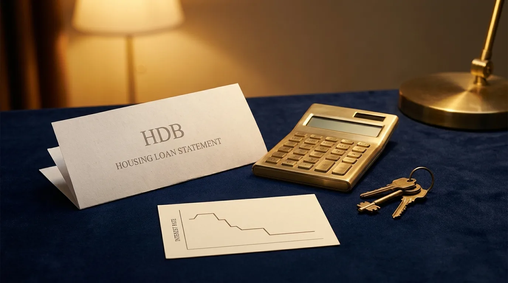
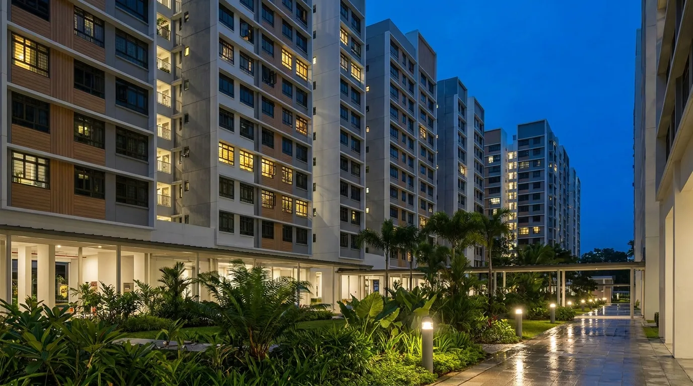

Refinancing Your HDB Loan to a Bank Loan in 2026: Is Leaving the 2.6% Worth It?
The HDB concessionary loan charges 2.6%. In 2026, bank packages are near 1.4% fixed (around 1.3% on SORA) — the widest gap in years, which is why owners are switching. On a typical balance that's roughly S$170–S$280 less a month, more on bigger loans. The catch: it's a one-way move — you cannot go back to the HDB loan. So you trade the rock-stable 2.6% for a lower rate you must actively keep low by refinancing every couple of years. Worth it on larger loans; often not worth it on small balances near the end of their tenure.
The HDB loan is certainty (2.6%, barely moves, set-and-forget). A bank loan is a lower rate you have to manage (cheaper now, but it resets, and there's no door back to HDB). The right answer depends on your loan size, how long you'll hold the flat, and whether you'll actually re-shop your rate every two years.
Why 2026 Changed the Math
For most of the last decade, the HDB concessionary loan was the easy choice: 2.6%, fixed for life, no refinancing to think about. It is pegged at 0.1% above the CPF Ordinary Account rate (2.5%), and it barely moves — it has sat at 2.6% for years and remains 2.6% through 2026.
What changed is the other side. Through 2025, interest rates fell hard: 3-month Compounded SORA dropped from above 3% to around 1.07% by mid-2026, and banks now offer fixed packages from about 1.40%. For the first time in years, a bank loan is a full percentage point cheaper than the HDB rate — and that gap is large enough that HDB owners are reviewing their loans in numbers, comparing offers well below 2.6%.
So the question is no longer "is a bank loan cheaper?" — in 2026 it clearly is. The real question is whether the saving is big enough, on your loan, to give up what the HDB loan gives you.
The Numbers: What You'd Actually Save

The saving scales with your outstanding loan. The bigger the balance, the more a 1%+ rate cut is worth.
Here's the monthly repayment on a 20-year remaining tenure, comparing the HDB 2.6% against a bank 1.40%, at three common outstanding balances.
| Outstanding loan | At 2.6% (HDB) | At 1.40% (bank) | You save / month |
|---|---|---|---|
| S$300,000 | ~S$1,604 | ~S$1,434 | ~S$170 |
| S$400,000 | ~S$2,139 | ~S$1,912 | ~S$227 |
| S$500,000 | ~S$2,673 | ~S$2,390 | ~S$283 |
The monthly figure is the cashflow saving. In interest terms the gap is bigger: at the lower rate you pay roughly 1.2% of your balance less in the first year — about S$3,600 on a S$300k loan, S$4,800 on S$400k, S$6,000 on S$500k. The reason your monthly saving looks smaller is that the cheaper loan also sends more of each payment to principal — so you pay less and build equity faster.
The One-Way Catch — No Going Back to HDB
This is the part that matters most, and the part owners most often miss. Switching from the HDB concessionary loan to a bank loan is a one-way door. HDB does not let you refinance a bank loan back into an HDB concessionary loan for the same flat. Once you leave 2.6%, it's gone for good on that property.
Why it matters: the HDB rate is stable and rarely changes. A bank rate is cheaper today, but it resets at the end of each lock-in (usually two years). If rates were to climb back above 2.6% in a few years, an HDB-loan holder simply keeps paying 2.6% — while you, on a bank loan, would have to refinance again to a new package or risk paying more. You're swapping a guaranteed ceiling for a lower floating cost you have to keep managing.
That's not a reason to stay — in 2026 the saving is real and rates are widely expected to stay low — but it is the reason to only switch when the numbers clearly justify giving up that certainty.
2.6% Stability vs Bank Savings
Side by side, what you keep and what you give up:
| HDB loan (2.6%) | Bank loan (~1.4%) | |
|---|---|---|
| Rate | 2.6%, pegged to CPF OA, barely moves | ~1.3–1.9%, resets every 2–3 yrs |
| Stability | Very high — set and forget | You must reprice/refinance at lock-in expiry |
| Switch back | — | Cannot return to the HDB loan |
| Cost to switch | None — no penalty to leave | Legal + valuation ~S$2,000–3,000 (often subsidised on larger loans) |
| Effort | None | Re-shop every couple of years to stay low |
| Best for | Small/short loans, peace of mind | Larger loans, hands-on owners |
One more practical point: there's no penalty to leave the HDB loan — it has no lock-in. The only costs are on the bank side (legal and valuation), and many banks subsidise those once the loan is large enough. That makes the decision almost entirely about loan size versus switching cost, and your appetite for managing a bank rate over time.
Does TDSR or MSR Apply?
A common worry: "my income changed since I bought — will I even qualify?" For most owners refinancing their own home, the reassuring answer is that the usual limits don't gate you.
Refinancing an owner-occupied home is exempt from the 55% Total Debt Servicing Ratio cap. And the 30% Mortgage Servicing Ratio is a purchase-time rule for HDB flats and ECs — it does not gate a refinance. So even if your income has dipped or you've taken on a car loan since you bought, you can usually still refinance. The bank will still ask for income documents and run its own credit check — but that internal check is not the regulatory TDSR/MSR test.
Two things that would bring the limits back: taking cash out on top of the refinance (the cash-out portion is assessed), or the flat not being owner-occupied. For a straightforward "lower my rate" refinance of the home you live in, neither applies — which is why these refinances are usually far smoother than the original purchase.
How to Switch, Step by Step

No penalty to leave the HDB loan, and owner-occupied refinancing isn't gated by TDSR/MSR — so the switch is usually straightforward.
It's a real transaction — a new bank loan redeems your HDB loan — but routine when sequenced right:
- 1Pull your numbers. Outstanding balance, remaining tenure, and current flat valuation. These decide whether the saving beats the switching cost.
- 2Compare the market, net of cost. Check fixed vs SORA packages across the banks, and confirm the legal/valuation cost (and whether the bank subsidises it) still leaves you clearly ahead. Use the refinance savings calculator first.
- 3Apply — no TDSR/MSR gate. As an owner-occupier you're exempt from the ratios; the bank verifies income for its own files and issues a letter of offer.
- 4Lawyer redeems and registers. Conveyancing redeems the HDB loan and registers the new bank mortgage. There's no penalty from HDB to leave. Plan for a few weeks.
- 5Remember it's permanent. You're now on a bank rate for good — diarise your lock-in expiry so you re-shop and never drift onto a high reset rate.
When It's Worth It — and When to Stay
Switch to a bank loan when
- Your outstanding loan is large — roughly S$250,000+, so the ~1.2% saving clearly beats the legal/valuation cost (and you likely get it subsidised).
- You have a good stretch of tenure left, so the saving compounds over years, not months.
- You're comfortable re-shopping your rate every couple of years to keep it low.
- You want the cash saving more than the set-and-forget certainty.
Stay on the 2.6% HDB loan when
- Your balance is small or the tenure is short — the legal/valuation fees eat most of the saving.
- You value certainty over admin — you don't want to track lock-ins and refinance every two years.
- You may sell soon (e.g. just past MOP and considering an upgrade) — you'd redeem the loan anyway.
- You want the maximum CPF and cash buffer and the simplicity the HDB loan gives.
If you're buying rather than refinancing, the decision is different — see HDB loan vs bank loan for new buyers. And for a worked private-property example of how a refinance actually plays out, read our refinancing case study.
Frequently Asked Questions
No. It's a one-way move. HDB does not allow you to refinance a bank loan back into an HDB concessionary loan for the same flat. You keep the lower bank rate, but you give up the option of returning to the stable 2.6% if rates rise later — the single most important thing to weigh before switching.
It scales with your loan. On a 20-year tenure, moving from 2.6% to about 1.4% cuts the monthly repayment by roughly S$170 on a S$300,000 balance, S$227 on S$400,000 and S$283 on S$500,000 — and in interest terms about 1.2% of your balance in the first year (around S$3,600 to S$6,000). The bigger the loan, the more it's worth.
Refinancing an owner-occupied home is exempt from the 55% TDSR cap, and the 30% MSR is a purchase-time rule that doesn't gate a refinance. So you can usually refinance even if your income has changed. The bank still asks for income documents and runs its own credit check, but that's not the regulatory test. Exceptions: taking cash out, or a non-owner-occupied flat.
No. The HDB concessionary loan has no lock-in and no early redemption penalty, so there's no cost to exit. The costs are on the bank side — legal and valuation, roughly S$2,000–3,000, often subsidised on larger loans. Your new bank package then has its own lock-in (usually two years) going forward.
Stay when your balance is small or you have few years left (fees eat the saving), when you value the stable 2.6% over managing refinancing, or when you plan to sell soon. The HDB rate is pegged at 0.1% above the CPF OA rate and changes rarely; a bank loan is cheaper now but resets every two to three years and must be actively kept low.
In 2026 they're well below it — fixed from around 1.4%, SORA near 1.3%. Most forecasts expect rates to stay low through 2026, but nobody can guarantee the future, and bank rates reset at each lock-in. The 2.6% is the certainty you trade away; the saving is real now but must be re-secured every couple of years.
Practically yes — most banks have a minimum loan for their refinancing packages and legal subsidies, commonly around S$200,000–300,000. Below that, the legal and valuation cost can outweigh the interest saved, so refinancing a small remaining HDB loan often isn't worth it. We model the net saving before you commit.
Still on the 2.6% HDB Loan? See What Switching Would Save.
Nexus Mortgage SG models the real net saving on your exact balance — the lower bank rate against the legal/valuation cost — and tells you straight whether it's worth leaving 2.6% or staying put. Independent, and at no cost to you.
Start My Free Report →Want a quick read on your numbers? WhatsApp Dan Ler at +65 8752 0859 for a free, no-obligation HDB refinancing review. Banks pay our fee — you pay nothing.
Run it yourself: refinance savings calculator · current rates.

About the author — Dan Ler has advised on Singapore home loans since 2017 at Nexus Mortgage SG, an independent brokerage comparing 16+ MAS-regulated lenders. He helps HDB owners weigh the 2.6% concessionary loan against current bank packages — net of cost, and honest about when staying put is the better call. Banks pay Nexus on disbursement, so there is no cost to the borrower.
Nexus Mortgage SG is an independent Singapore mortgage advisory. This article is general information, not financial advice. Monthly repayments are computed on the stated balances over a 20-year tenure at 2.6% and 1.40% and assume the rate holds; your actual figures depend on your balance, tenure, package terms and future rate resets. The HDB concessionary rate (2.6%, pegged 0.1% above the CPF Ordinary Account rate) and TDSR/MSR rules are set by HDB, CPF and MAS and can change. Switching from an HDB loan to a bank loan cannot be reversed — always confirm your eligibility and current packages before acting. Sources: HDB loan interest rate, CPF: HDB vs bank loan, MAS TDSR.